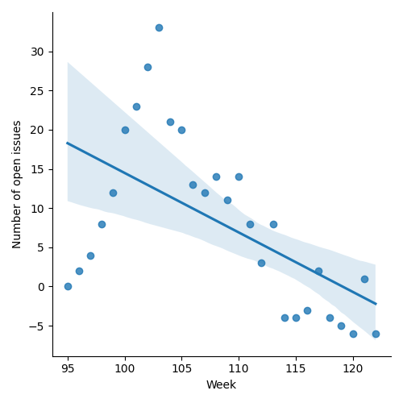
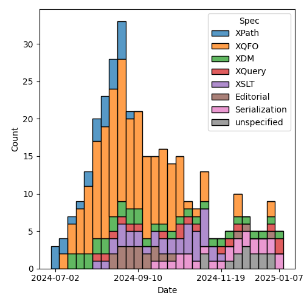
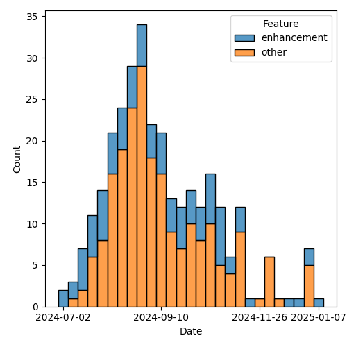

QT4 CG Meeting 105 Minutes 2025-01-14
Meeting index / QT4CG.org / Dashboard / GH Issues / GH Pull Requests
Table of Contents
- Draft Minutes
- Summary of new and continuing actions
[0/7] - 1. Administrivia
- 2. Technical agenda
- 2.1. PR #1686: 1685 Pipeline Operator
- 2.2. PR #1687: 1672 array:values, map:values: Alternatives
- 2.3. PR #1692: 1680 Fix switch syntax ambiguity
- 2.4. PR #1696: 1136 Optional names in typed function types
- 2.5. PR #1609: 1651 Ordered Maps
- 2.6. PR #1689: 1684 Composite merge keys; current-merge-key-array function
- 2.7. PR #1694: 1632 Add xsl:map/@select
- 3. Any other business
- 4. Adjourned
Draft Minutes
Summary of new and continuing actions [0/7]
[ ]QT4CG-082-02: DN to work with MK to come to agreement on the fn:ranks proposal[ ]QT4CG-088-04: [Someone] needs to update the processing model diagram needs vis-a-vis the static typing feature[ ]QT4CG-097-02: MK to make the XSD schema component references into links to XSD[ ]QT4CG-097-03: DN to proposal an axis for accessing the siblings of a node.[ ]QT4CG-103-01: MK to add an example of showing all the properties for an untyped node.[ ]QT4CG-103-02: MK to review other ways of handling namespaces in fn:path
1. Administrivia
1.1. Roll call [10/12]
Regrets: DN.
[X]David J Birnbaum (DB)[X]Reece Dunn (RD)[X]Sasha Firsov (SF)[X]Christian Grün (CG)[X]Joel Kalvesmaki (JK) [:05-][X]Michael Kay (MK)[ ]Juri Leino (JLO)[X]John Lumley (JWL)[ ]Dimitre Novatchev (DN)[X]Wendell Piez (WP)[X]Ed Porter (EP)[X]Norm Tovey-Walsh (NW). Scribe. Chair.
1.2. Accept the agenda
Proposal: Accept the agenda, amended to remove 1673 and 1677 from discussion.
Accepted.
1.2.1. Status so far…
These charts have been adjusted so they reflect the preceding six months of work.

Figure 1: “Burn down” chart on open issues

Figure 2: Open issues by specification

Figure 3: Open issues by type
1.3. Approve minutes of the previous meeting
Proposal: Accept the minutes of the previous meeting.
Accepted.
1.4. Next meeting
This next meeting is planned for 21 January 2025.
No regrets heard.
1.5. Review of open action items [3/9]
(Items marked [X] are believed to have been closed via email before this agenda was posted.)
[X]QT4CG-080-07: NW to update the build instructions in the README- Withdrawn
[ ]QT4CG-082-02: DN to work with MK to come to agreement on the fn:ranks proposal[X]QT4CG-088-01: NW to consider how best to add a dedication to MSM.[ ]QT4CG-088-04: [Someone] needs to update the processing model diagram needs vis-a-vis the static typing feature[X]QT4CG-089-01: CG to draft a PR that attempts to resolve the operators described in #755 to a smaller number of orthogonal choices.[ ]QT4CG-097-02: MK to make the XSD schema component references into links to XSD[ ]QT4CG-097-03: DN to proposal an axis for accessing the siblings of a node.[ ]QT4CG-103-01: MK to add an example of showing all the properties for an untyped node.[ ]QT4CG-103-02: MK to review other ways of handling namespaces in fn:path
1.6. Review of open pull requests and issues
1.6.1. Blocked
The following PRs are open but have merge conflicts or comments which suggest they aren’t ready for action.
1.6.2. Merge without discussion
The following PRs are editorial, small, or otherwise appeared to be uncontroversial when the agenda was prepared. The chairs propose that these can be merged without discussion. If you think discussion is necessary, please say so.
- PR #1695: 1284 Define streamability of distinct-ordered-nodes
- PR #1693: 1683 Extend xpath-functions schema with CSV components
- PR #1690: 1688 In "implementation-defined" appendix, fix absent generated link
Proposal: merge these PRs without further discussion.
Approved.
1.6.3. Close without action
It has been proposed that the following issues be closed without action. If you think discussion is necessary, please say so.
- Issue #1006: regular expression addition - word boundaries
- Issue #490: Control over schema validation in parse-xml(), doc(), etc.
- Issue #108: Template match using values of [tunnel] parameters
Proposal: close these issues without further action.
Approved.
1.6.4. Substantive PRs
The following substantive PRs were open when the agenda was prepared.
- PR #1609: 1651 Ordered Maps
- PR #1686: 1685 Pipeline Operator
- PR #1687: 1672 array:values, map:values: Alternatives
- PR #1689: 1684 Composite merge keys; current-merge-key-array function
- PR #1692: 1680 Fix switch syntax ambiguity
- PR #1694: 1632 Add xsl:map/@select
- PR #1696: 1136 Optional names in typed function types
2. Technical agenda
2.1. PR #1686: 1685 Pipeline Operator
See PR #1686
CG reviews the summar at the top of the PR.
- SF: I see it as a collection chaining operator. This is similar to the map interface in typescript and Javascript. But usually, these operators allow users to change the size of the collection or abort processing. While this is a very special case for chainable operations, how can we generalize it?
- CG: You mean interrupting the pipeline, or did you mean something else?
- SF: Interruption of a pipeline is nice to have, but not commonly provided
- … But shrinking a collection with filter is common.
- … It’s like “search and kill” and return the results.
- MK: How about a call on filter in the chain?
- SF: Then it will be the combination of the chain and filter, but that will complicate the syntax.
- MK: No, it’s just a filter step in the pipeline.
- SF: The filter is accepting the collection as an argument. But that means that the first argument has to be the collection.
- MK: That’s not necessarily true; the implementation can pipeline the operations however it wants.
SF will provide some examples of behavior that should be possible but arent’.
- JWL: This is the first use of a context value rather than a context item. So we’ve got “.” that is sometimes a collection and sometimes a value. And “.” could be empty. Is that true?
- CG: Some time ago, we generalized the context value. That’s now used in many places. The item is still a single item.
- MK: Yes, we’ve made a change, but we made it earlier.
- JWL: Yes, but this really this really throws it into focus.
- JK: I love the abbreviated syntax, but I worry that the use of “-” is going to cause a lot of confusion when it comes to the “=” sign variation. Lots of folks seem to think the “=” is more powerful and that’s potentially confusing. I think we need a syntax that doesn’t lead people to this confusion. A simple change like using a “~” might be sufficient. They are quite unalike and the symbols we’re choosing suggest that they’re very alike.
- CG: The previous issues there was discussion of good symbols. It’s not clear what the best answers are.
- JK: I’d like to see some brainstorming on alternatives.
- SF: I think the shorter syntax should be … shorter.
- DB: If we look at the examples on the screen, it seems a lot of them are well
served by the simple map and the existing arrow operator.
- … We can use the arrow without the “.” in
tokenizeandstring-joinfor example. - … One of the features is the ability to put the argument into a position other the first, but I don’t see that being usee very much.
- … If that’s a feature, it would be nice to have stronger examples.
- … We can use the arrow without the “.” in
- MK: I think there are a number of use cases; “.” not as the first argument.
Another is any expression that uses a “.” in a context that isn’t a
function,
. + 1.- … Another use case is setting the context for a subsequent expression. Currently, you have to resort to “!” for that and that doesn’t seem right when it’s a singleton on the left.
- … And it certainly doesn’t handle arrays. I think there are a lot of use cases where you want ! for arrays.
- SF: I don’t like the semantics; and the syntax is too long.
2.2. PR #1687: 1672 array:values, map:values: Alternatives
See PR #1687
CG introduces the issue.
- CG: This is an issue about terminology. We added
map:valuesandarray:valuesa while ago, this proposal is to rename them to “items” the same as the deep lookup operator. - MK: I can’t say I’m happy with either term, but I can’t think of anything better!
- JWL: If you have maps with nodes from different documents, there’s no duplicate removeal or anything like that.
- CG: That’s right.
Proposal: accept this PR.
Accepted.
2.3. PR #1692: 1680 Fix switch syntax ambiguity
See PR #1692
MK introduces the issue.
- MK: I’ve changed the grammar so that you have the
(), but the expression is optional. - JWL: Is it equivalent to
switch (.)? - MK: No. It’s equivalent to
switch (true())!
Proposal: accept this PR.
Accepted.
- MK: I had a little bit of conversation with Gunther about how to prevent this kind of error in the future. I think Gunther may be able to provide some tools to help us with this.
Some discussion of grammar analysis.
- JWL: I’m transforming the grammars; I might be able to add such tests, but I haven’t done it yet. I’ll try to have another version in a couple of week’s time.
2.4. PR #1696: 1136 Optional names in typed function types
See PR #1696
- MK: I think this was a suggestion by RD a while ago.
- … It adds syntax that’s purely documentary.
- … You can use typed function params instead of sequence type in function types.
- … There are no symantic implications of the names, but they can be used as a hint to readers.
- … I added a rule that they have to be distinct names in case we find a use for them.
- NW: Is anyone else concerned that it might confusing.
- MK: I think it’s more confusing now because people expect to be able to put names in.
- RD: I think it’s useful to be able to have it as a hint.
- MK: I can see syntax directed editors using the names in prompts.
- JWL: If we have a function item, do we have any mechnism to find out its type signature? I don’t think we have any introspection functions.
- MK: No, we don’t. We have introspection on schema types but not function types.
- JWL: I think that’s where you might want to be able to use the names.
Proposal: accept this PR.
Accepted.
2.5. PR #1609: 1651 Ordered Maps
See PR #1609
- MK: I think the PR in its current state isn’t viable; it doesn’t reflect
recent discussion. I think trying to summarize where we are might help:
- I think we had a fair bit of consensus building up that maps should be ordered by default.
- … When you create a map with a map constructor or with merge, etc., the ordering of entries should be defined.
- There are perhaps two things on which we didn’t have consensus:
- I think most of those functions should have an option not to maintain the order. If you have millions of entries, you might not want the space and/or time overhead of ordering.
- The other was whether the incremental operations (a sequence of puts, for example), how precisely we should define the result of those operations. Do we leave it implementation defined at some point.
- I think we had a fair bit of consensus building up that maps should be ordered by default.
- CG: It’s always easy to say that something is “just an implementation” issue. I’ve become optimistic that the overhead can be reduced a lot. Our experience is that ordered maps add about 5% in space and not much in time. If it’s fast enough, we could simplify the specification by deciding that we don’t have to have an alternative way of ordering map entries. We could have positional access to maps and other features. My hope is to simplify that we only need ordered maps.
- MK: What about put?
- CG: I think if the entry doesn’t exist, then the obvious solution is to append
the entry. At first, I didn’t want to specify this because I don’t know how
other implementations work. But we could make it implementation defined. If a
putreplaces an entry, then I think the order should remain unchanged. The special case of items that are different but compare equal is an edge case I don’t feel strongly about. - JWL: I’d like to say I welcome the “map ordering” function to determine if a particular map is ordered.
- CG: From the user point of view, I don’t think there’s any advantage to having
unordered maps. It’s really about implementations. We had the
unorderedfeature that we removed in 4.0. We could review the features that might exist only for implementations. - MK: It’s certainly true that if it’s important, we could add an implementation defined option to say that a map is unordered without putting it in the spec.
MK will put forward a new PR that initially leaves out the option to make maps unordered. We can come back to it if we think it’s important.
2.6. PR #1689: 1684 Composite merge keys; current-merge-key-array function
See PR #1689
- MK: This is a follow-up to the proposal to add composite sort keys. In XSLT,
the whole semantics of merge keys are defined in terms of sort keys. So we’ve
introduced composite merge keys as well. I thought that ought to at least be
mentioned!
- … I discovered a sort of bug in the XSLT 3.0 spec because it allows the merge keys to be an empty sequence and doesn’t really discuss that case. Added tests to cover that!
- MK: One consequence of this change is that the current merge key function
would have to return a sequence of sequences which doesn’t work. We add
current-merge-key-arrayto handle this case. - MK: There’s a bit of terminology change to avoid confusion with grouping keys.
- MK: The
current-merge-key-arrayfunction becomes the primary function. The current function just returns the flattening of that. That makes it compatible with the 3.0 specification.
Proposal: accept this PR.
Accepted.
2.7. PR #1694: 1632 Add xsl:map/@select
See PR #1694
- MK: This is pretty straightfoward.
- MK: I brought
xsl:map-entryinto line with respect to error codes. - MK:
xsl:mapinstruction gains aselectattribute.- … There are a few terminology changes.
Proposal: accept this PR.
Accepted.
3. Any other business
None heard.